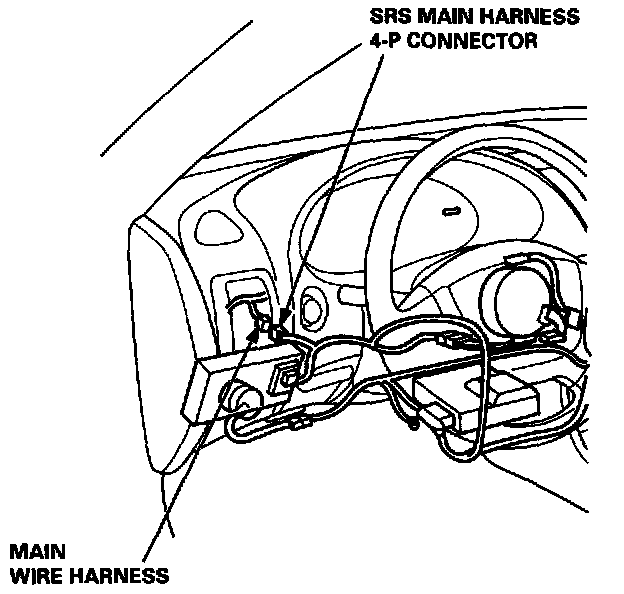
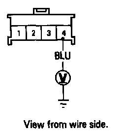
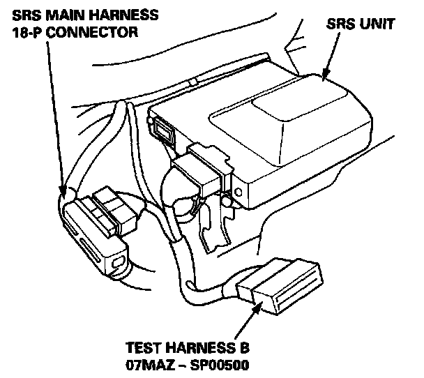
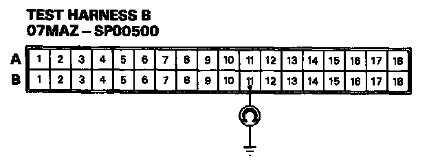
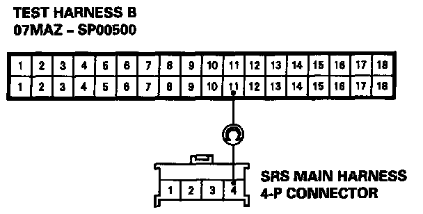
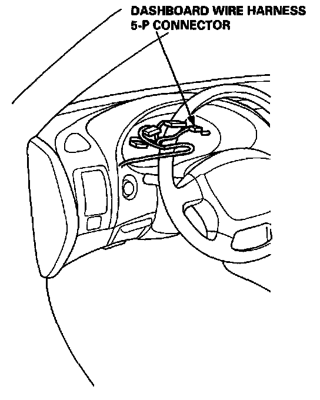
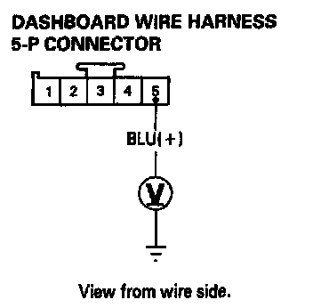

Mode I - Short or Open In SRS Indicator Wire Harness
MODE I - SHORT OR OPEN IN SRS INDICATOR WIRE HARNESS
1. Disconnect the SRS main harness 4-P connector from the main wire harness.

2. Turn the ignition switch ON (II) and wait for six seconds. Measure the voltage between the No.4 terminal (+) in the SRS main harness 4-P connector and body ground.
- If voltage is more than 8.5 V, go to step 8.
- If voltage is less than 8.5 V, go to step 3.
NOTE: The original radio has a coded theft protection circuit. Be sure to get the customer's code number before disconnecting the battery cables.
3. Disconnect the battery negative cable and then the positive cable. Then connect the short connector(s) (RED) to the airbag(s).

4. Connect Test Harness B between the SRS unit and SRS main harness 18-P connector.
5. Reconnect the battery positive cable and negative cable.

6. Check for continuity between the B11 terminal and body ground.
- If there is continuity, the SRS main harness is shorted. Replace the SRS main harness and recheck the voltages according to the chart.SRS Indicator Light Doesn't Go Off
- If there is no continuity, go to step 7.

7. Check for continuity between the B11 terminal of Test Harness B and the No.4 terminal of the SRS main harness 4-P connector.
- If there is continuity, the SRS unit is faulty. Replace it and recheck the voltages according to the chart.SRS Indicator Light Doesn't Go Off
- If there is no continuity, there is an open in the SRS main harness. Replace the SRS main harness and recheck the voltages according to the chart.

8. Reconnect the SRS main harness 4-P connector to the main wire harness. Disconnect the dashboard wire harness 5-P connector from the gauge assembly.

9. Turn the ignition switch ON (II) and wait for six seconds. Measure the voltage between the No.5 terminal (+) and body ground (-).
- If voltage is more than 8.5 V, the SRS indicator circuit is faulty (in the gauge assembly). Replace the SRS indicator circuit assembly and recheck the voltages according to the chart.SRS Indicator Light Doesn't Go Off
- If voltage is less than 8.5 V, the dashboard harness (or the main wire harness) is fault Replace it and recheck the voltages according to the chart.SRS Indicator Light Doesn't Go Off